[Video] Niệm Phật công đức thù thắng - Chu kỳ 3 | Chương trình 3
Tu hành niệm Phật, sẽ có danh dự, thành tựu quả báo lớn, các điều lành đầy đủ, được vị cam lồ, đến được chỗ vô vi, sẽ thành tựu thần thông, trừ các loạn tưởng, đạt được quả Sa-môn
Chi tiết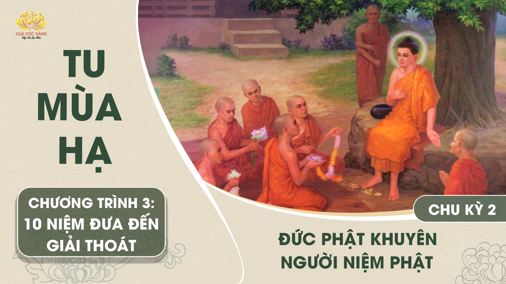
[Video] Đức Phật khuyên người niệm Phật - Chu kỳ 2 | Chương trình 3
Quán chiếu các việc chúng ta đã làm: Sát sinh, trộm cắp, tà dâm, nói dối, 2 lưỡi, ác khẩu, thêu dệt, say sưa, nghiện ngập,... khiến phải rơi xuống 3 đường ác.
Chi tiết[Video] Một pháp đưa đến giác ngộ giải thoát | Chu kỳ 1 - Chương trình 3
Có một pháp này, này các Tỷ kheo, được tu tập, được làm cho sung mãn, đưa đến nhất hướng, ly tham, đoạn diệt, an tịnh, thắng trí, giác ngộ, Niết bàn. Một pháp ấy là gì? Chính là niệm pháp… niệm Tăng… niệm Giới… niệm Thí… niệm Thiên…
Chi tiết[Video] Lễ khai đàn tu tập theo 3 tháng an cư của chư Tăng - chương trình số 3 | Ngày 03/5/QM
Lễ khai đàn tu tập theo 3 tháng an cư của chư Tăng
Chi tiết[Video] Lễ khai đàn tu tập theo 3 tháng an cư của chư Tăng - chương trình số 2
“Sáu pháp Hòa Kính là pháp khả ái, là pháp khả lạc, khiến cho ái niệm, khiến cho tôn trọng, khiến cho phụng sự, khiến cho cung kính, khiến cho tu tập,
Chi tiết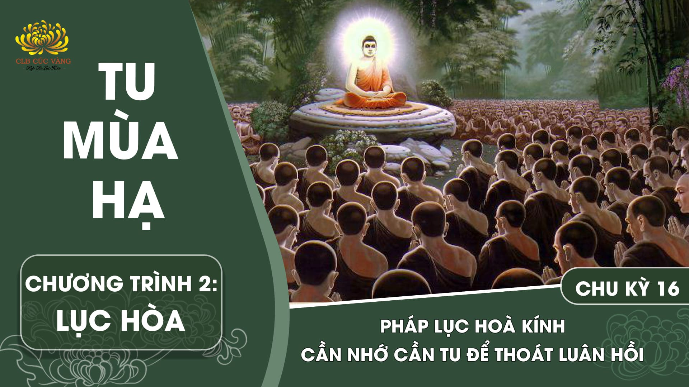
[Video] Pháp lục hòa kính - Cần nhớ cần tu để thoát luân hồi - Chu kỳ 16 | Chương trình 2
Kinh Tiểu bộ, Kinh Quán Di Lặc dạy: Tu sáu pháp hòa kính đem đến hạnh phúc lớn cho chư Thiên và Người, được gặp tất cả Phật...
Chi tiết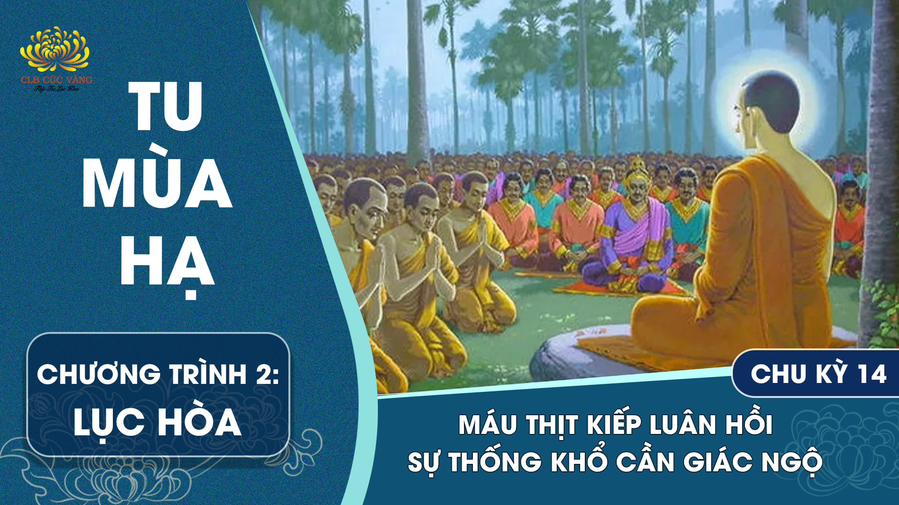
[Video] Máu thịt kiếp luân hồi - Sự thống khổ cần giác ngộ - Chu kỳ 14 | Chương trình 2
Các ông nghĩ thế nào, này các Tỷ-kheo, cái nào là nhiều hơn, dòng máu tuôn chảy do đầu bị thương tích khi các ông lưu chuyển luân hồi trong thời gian dài này, hay là nước trong bốn biển lớn?
Chi tiết[Video] Số kiếp luân hồi - Sự thống khổ cần giác ngộ - Chu kỳ 13 | Chương trình 2
Tất cả đất trên mặt đất đều nhóm lại một chỗ, nhồi lại thành viên tròn nhỏ như hạt đậu. Nếu tính chúng sinh từ vô thỉ đến nay đã sinh làm cha, mẹ, con, cháu, cứ mỗi một người thả xuống một viên đất, như vậy thì số viên đất đã hết mà số cha, mẹ, con, cháu vẫn còn.
Chi tiết...Nơi đây, Thân Tử mới qua đời không bao lâu, thì các đệ tử Ni-kiền Thân Tử đã chia rẽ và phá hoại nhau; họ đấu tranh, kiện tụng, cột trói lẫn nhau, thù nghịch nhau, tranh luận với nhau rằng
Chi tiết[Video] Gieo nhân gì để được đủ duyên hướng dẫn hội chúng tu lục hòa - Chu kỳ 11 | Chương trình 2
Các Thầy nên nhớ nghĩ pháp lục trọng, kính trọng, giữ mãi trong lòng đừng cho quên mất. Thế nào là sáu?... Ở đây Tỳ-kheo thân hành niệm từ, như ngắm hình trong gương, đáng kính, đáng quý, chớ cho quên mất.
Chi tiết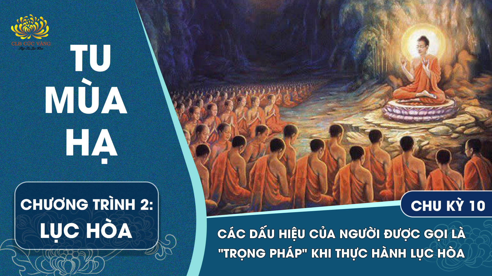
Thế nào là sáu pháp có nhiều thành quả? Đó là sáu trọng pháp. Nếu Tỳ-kheo tu sáu trọng pháp này thì đáng kính, đáng trọng, hòa hợp với chúng, không tranh tụng, tu một hạnh không xen tạp. Thế nào là sáu?
Chi tiết[Video] Lục hòa - Con thuyền vững chắc đưa chúng sinh qua đường sinh tử - Chu kỳ 15 | Chương trình 2
Cũng vậy là tội và phước cùng sự tương quan giữa phước và tội, tâu Đại vương! Một viên đá dù bé như hạt tiêu nó vẫn bị chìm xuống nước. Tương tự vậy, có người làm việc ác, dù chỉ một lần, như giết sanh mạng loài hữu tình;
Chi tiết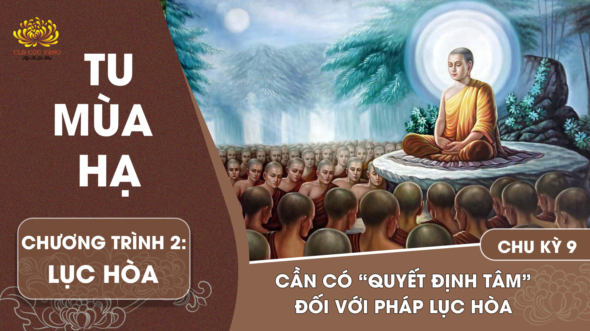
[Video] Cần có “Quyết Định Tâm” đối với pháp lục hòa - Chu kỳ 9 | Chương trình 2
Có sáu pháp cần phải ghi nhớ này, này các Tỳ-kheo, tạo thành tương ái, tạo thành tương kính, đưa đến hòa đồng, đưa đến không tranh luận, hòa hợp, nhất trí. Thế nào là sáu?
Chi tiết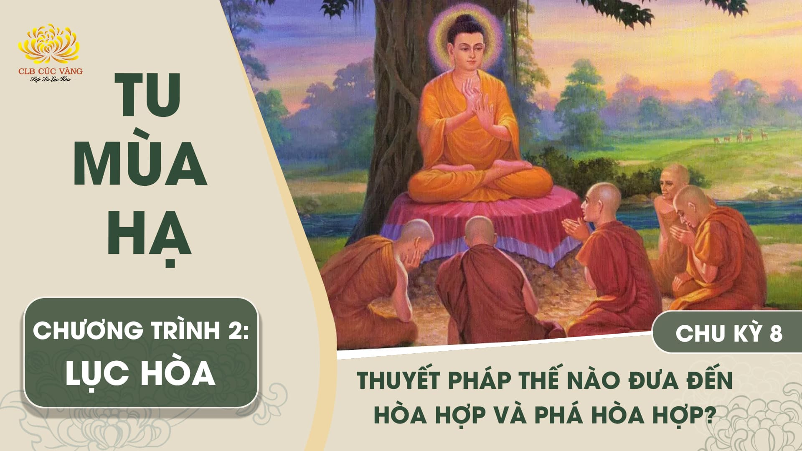
[Video] Thuyết pháp thế nào đưa đến hòa hợp và phá hòa hợp? - Chu kỳ 8 | Chương trình 2
Các Tỷ-kheo thuyết phi pháp là phi pháp; thuyết pháp là pháp; thuyết luật là luật; thuyết phi luật là phi luật; thuyết điều Như Lai không nói, không thuyết, là điều Như Lai không nói, không thuyết; thuyết điều Như Lai có nói,
Chi tiết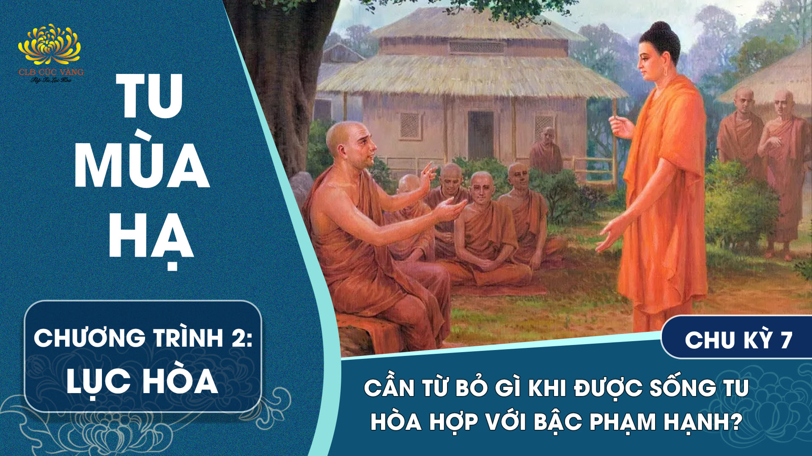
[Video] Cần từ bỏ gì khi được sống tu hòa hợp với bậc phạm hạnh? - Chu kỳ 7 | Chương trình 2
Bạch Thế Tôn, con từ bỏ tâm của con và sống thuận theo tâm của những Tôn giả ấy. Bạch Thế Tôn, chúng con tuy khác thân nhưng giống như đồng một tâm. Bạch Thế Tôn, như vậy chúng con sống hòa hợp, hoan hỷ với nhau, như nước với sữa, sống nhìn nhau với cặp mắt thiện cảm.
Chi tiết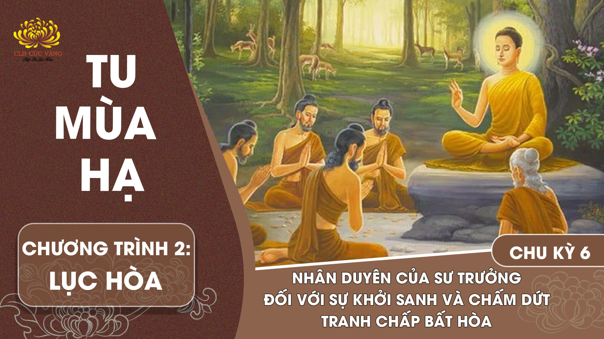
Này A Nan, nếu có Tỳ-kheo khởi tâm phẫn nộ, do tâm phẫn nộ, nên đối với bậc Sư trưởng không sanh tâm cung kính, tôn trọng, cũng không thể tôn thờ,
Chi tiếtỞ đây, này các Tỷ-kheo, tại hội chúng nào các Tỷ-kheo sống cạnh tranh, tranh luận, đấu tranh nhau, đả thương nhau bằng những binh khí miệng lưỡi. Này các Tỷ-kheo, đây gọi là hội chúng không hòa hợp.
Chi tiết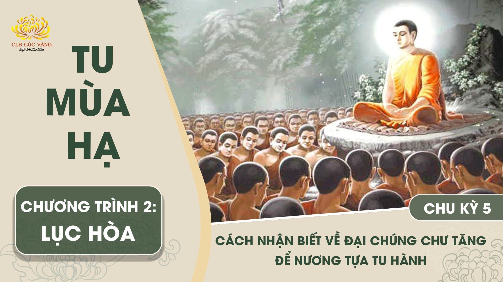
[Video] Cách nhận biết về đại chúng chư Tăng để nương tựa tu hành - Chu kỳ 5 | Chương trình 2
Ở đây, này các Tỷ-kheo, tại hội chúng nào các Tỷ-kheo sống hòa hợp hoan hỷ, không có luận tranh, sống như nước với sữa lẫn lộn, nhìn nhau bằng cặp mắt ái kính. Này các Tỷ-kheo, đây gọi là hội chúng hòa hợp.
Chi tiết[Video] Phúc báu khi làm cho hội chúng hoà hợp - Chu kỳ 4 | Chương trình 2
Bạch Thế Tôn, với chúng Tăng bị phá, làm cho hòa hợp lại, đem đến kết quả gì? Này A Nan, đem đến Phạm công đức! Bạch Thế Tôn, thế nào là Phạm công đức? Này A Nan, trong một kiếp, được sống hoan hỷ ở Thiên giới.
Chi tiết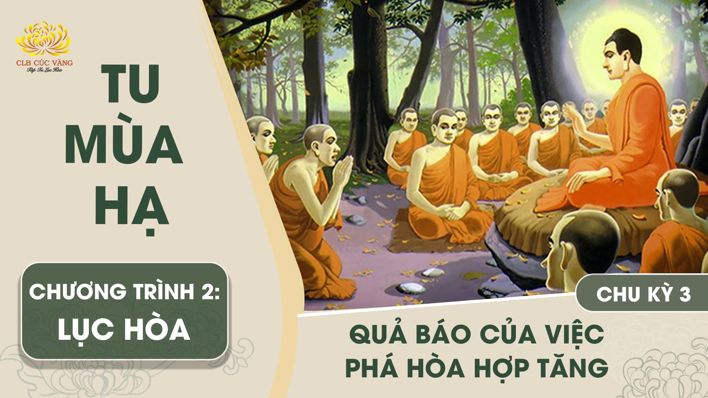
[Video] Quả báo của việc phá hòa hợp Tăng - Chu kỳ 3 | Chương trình 2
Bạch Thế Tôn, phá hoại Tăng hòa hợp, đem lại kết quả gì?... đem lại tội ác kéo dài đến một kiếp,... bị nấu trong địa ngục một kiếp.
Chi tiết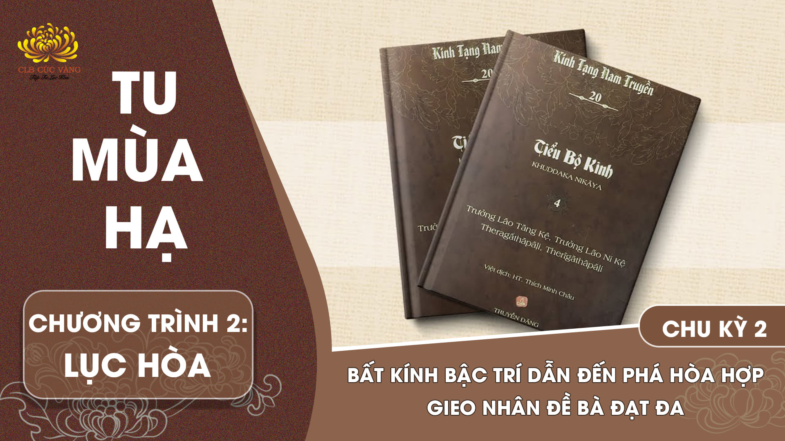
[Video] Bất kính bậc trí dẫn đến phá hòa hợp – gieo nhân Đề Bà Đạt Đa - Chu kỳ 2 | Chương trình 2
Thuở xưa, khi vua Phạm Thọ (Brahmadatta) trị vì ở Ba-la-nại, Bồ-tát sanh làm con chim cun cút đầu đàn, được vây quanh với hàng ngàn chim cun cút,
Chi tiết[Video] Lợi ích khi vâng lời bậc hiền trí thực hành hòa hợp đoàn kết - Chu kỳ 1 | Chương trình 2
Thuở xưa, Bồ-tát sanh làm thần cây trong một rừng cây sa-la. Bồ-tát nói với các bà con: Khi các ngươi lựa chọn trú xứ, chớ lựa chọn các cây mọc một mình ở khoảng trống. Hãy lựa chọn trú xứ chung quanh chỗ mà ta đã lựa chọn trong rừng sa-la này.
Chi tiết[Video] Năng lực độ sinh từ Pháp quy y và trì giới | Chu kỳ 16 - Chương trình 4
Lúc bấy giờ, trong lãnh thổ của quốc vương Ba Tư Nặc (Pasenadi), nước Kiều Tát La (Kosala), có tên cướp An-gu-li-ma-la (Aṅgulimāla), là một thợ săn, tay vấy máu, sát hại, bạo tàn, không có lòng từ mẫn đối với chúng sanh
Chi tiết[Video] Bồ tát chịu khổ thay cho chúng sinh thế nào? | Chu kỳ 16 - Chương trình 4
Các ông muốn thấy xá-lợi của ta khi ta làm Bồ-tát tu khổ hạnh thuở xưa không?... Đức Thế Tôn liền dùng cánh tay tướng tốt trăm phước trang nghiêm vỗ xuống đất nơi ấy. Tức thời, đất đai chấn động sáu cách liền nứt toạt ra, một ngôi tháp bảy báu vọt ra với lưới báu trang nghiêm ở bên trên. Đại chúng thấy vậy rồi, sinh lòng hy hữu.
Chi tiết[Video] Nhận diện khổ của cuộc đời | Chu kỳ 15 - Chương trình 4
Thế nào là tám khổ? Đó là sinh khổ, già khổ, bệnh khổ, tử khổ, thương yêu mà xa lìa là khổ, mong cầu không được là khổ, oán ghét mà gặp nhau là khổ, sầu lo buồn phiền là khổ. Đó là tám khổ.
Chi tiết![[Video] Cách tránh cạm bẫy trừ tai họa | Chu kỳ 14 - Chương trình 4](../media.phamthiyen.com/files/news/2025/06/17/cach-tranh-cam-bay-tru-tai-hoa-013433.jpg)
[Video] Cách tránh cạm bẫy trừ tai họa | Chu kỳ 14 - Chương trình 4
Gọi ba lần như vậy, Mạc-lợi phu nhân mới bước ra. Bà không trang điểm, chỉ mặc đơn sơ, song đứng giữa mọi người, sắc đẹp và phong cách lại sáng rỡ như mặt trời mặt trăng, gấp bội lúc bình thường. Vua giật mình kính nể hỏi:
Chi tiết[Video] Nhận biết cạm bẫy và tai họa | Chu kỳ 13 - Chương trình 4
Này các Tỷ kheo, nếu đi đến chỗ không phải hành xứ của mình, chỗ cảnh giới của người khác là sắc, thanh, hương, vị và xúc khá lạc, khả ý, hấp dẫn... Ác ma sẽ nắm được cơ hội, sẽ bắt được đối tượng...
Chi tiết[Video] Nhận diện sự bố thí của Bồ tát và phàm phu | Chu kỳ 12 - Chương trình 4
Thưa đại đức, Đức Thế Tôn là bậc Toàn Giác, không có việc gì trên thế gian mà ngài hướng tâm đến lại không biết; thế khi Đức Thế Tôn cho Đề-bà-đạt-đa xuất gia, ngài có biết rằng sau này Đề-bà-đạt-đa âm mưu chia rẽ Tăng chăng?
Chi tiết[Video] Hành tướng của kẻ nghèo khổ qua góc nhìn Phật giáo | Chu kỳ 11 - Chương trình 4
Tương truyền ở quốc độ Câu Lâu (Kuru) tại thành phố Hat-thi-ni-pu-ra (Hatthinipura) có một gái giang hồ tên là Se-ri-ni (Serinì).
Chi tiết[Video] Những điều cần học, cần nghe để thành tựu trí tuệ biện tài | Chu kỳ 10 - Chương trình 4
Năm giới, thập thiện, lục độ, bốn tâm bình đẳng, tứ thiền, ba môn giải thoát chính là pháp yếu điều phục mình. Các kỹ thuật như làm cung, lái thuyền, điêu khắc... đều là việc hay giỏi trong thế gian, nếu để tâm ý buông lung sẽ đi vào đường sinh tử.
Chi tiết